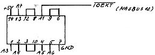

80-Bus Journal |
Jan/Feb/März 1984 · Ausgabe 1 |
Klaus Flockau hat das Signal mit einem 74LS32 dekodiert. Das System funktioniert mit folgender Verknüpfung:

Wie Georg Assmann die Dekodierung auf der Adapterkarte löst, ist noch
nicht bekannt. Lassen wir uns überraschen.
Meine FDC-Karte läuft nun bereits mit einem 8″-Laufwerk; ist geplant, den Software-Service auch auf diesem Format anzubieten? (Nein, da nur sehr wenige Leser über 8″-Laufwerke verfügen. Sicher ist aber Helmut Emmelmann im Bedarfsfalle bereit, hier beim Kopieren einzuspringen. Red.)
Da im Journal kein 8″-Format angegeben ist, habe ich ein eigenes: 16 Sektoren zu 256 Bytes, SS, SD, Skew-Faktor 2.
Da in Berlin bei mindestens 5 Nascom- Freaks das Fileverwaltungssystem CASMON läuft (Heft 7/8-83, pp 23), inzwischen Version 2.0 mit 9600 Bd und 2 MByte pro C90- Cassette, habe ich mich entschlossen, ein dazu kompatibles DOS (DOS-MON) zu schreiben, sodaß keinerlei Software geändert werden muß. Außerdem kann das vorhandene Bandgerät wie ein zweites Floppy- Laufwerk angesprochen werden.
Eine wichtige Information habe ich aus dem CP/M-Sonderheft; sie betrifft das Diskettenformat: Die Lücke zwischen ID und Datenblock muß für den 1793 das Format 11xFF, 6x00 haben, 17x00 sind nicht lesbar. Wenn man den 1793 durch den 1797 ersetzt (kompatibel bis auf Pin25, dieser ist auf unserer Karte frei), kann man auch dieses Format lesen.
Zum Schluß möchte ich Ihnen noch ein Lob aussprechen: Die Floppy- Serie fand ich sehr gut als Einführung in dieses gewiß nicht leichte Thema.
Martin Homuth, Berlin
Kürzlich war ja das Nascom- Treffen in unserer Schule, es waren immerhin mit mir 5 Teilnehmer da, davon einer sogar aus Mainz. Sehr gut war der Erfahrungsaustausch. Eine kurze Charakterisierung der Geräte und Interessen;
Nascom2, Cassette; zwar Profi auf Großanlagen, sonst Anfänger
Nascom2, Cassette; zwei Funkamateure, sind dabei, CLD-Softcontroller aufzubauen
Nascom2, CLD-Hardcontroller; Hardwarespezialist
Bedauert wurde, daß sich immer mehr nicht mehr kompatible Betriebssysteme entwickeln (deshalb ja unser Bestreben, über ECB-
| Seite 33 von 52 |
|---|